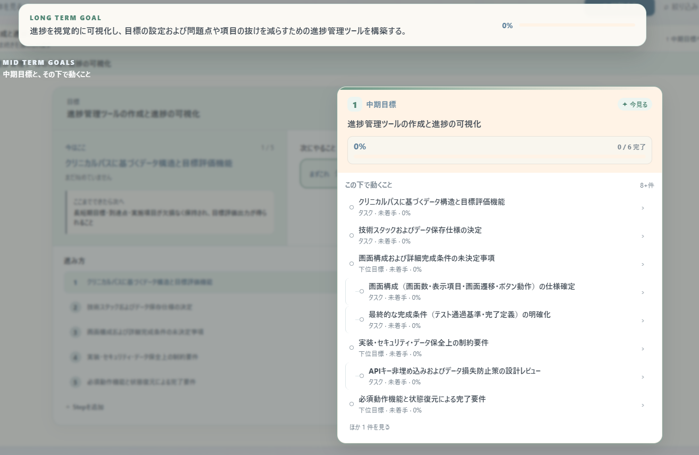

1
企画はあるのに、タスク化で詰まる
資料や話した内容から、今必要なタスク候補へ分解します。
計画や企画の全体像はなんとなく見えている。でも、具体的なタスクに落とすところで頭を使い切ってしまう。SobaYozinは、その“仕事になる前の仕事”を一緒に整理します。
資料や話した内容から、今必要なタスク候補へ分解します。
現在の状態を踏まえて、「まずここから」を優先して提示します。
自然な言葉で進捗を伝えると、状態を整理して次の行動へつなげます。
最初から要件をきれいに書く必要はありません。SobaYozinが必要なところだけ確認し、次の行動候補まで整理します。

SobaYozinが狙っているのは、チャットの回答を増やすことではなく、曖昧な状態から次の行動が決まるまでをつなぐことです。
まだ完成品を売る段階ではなく、「どこで詰まるか」「AIの整理が本当に役立つか」「どんな仕事・人に刺さるか」を検証しています。興味のある方にはβ版をお渡ししています。